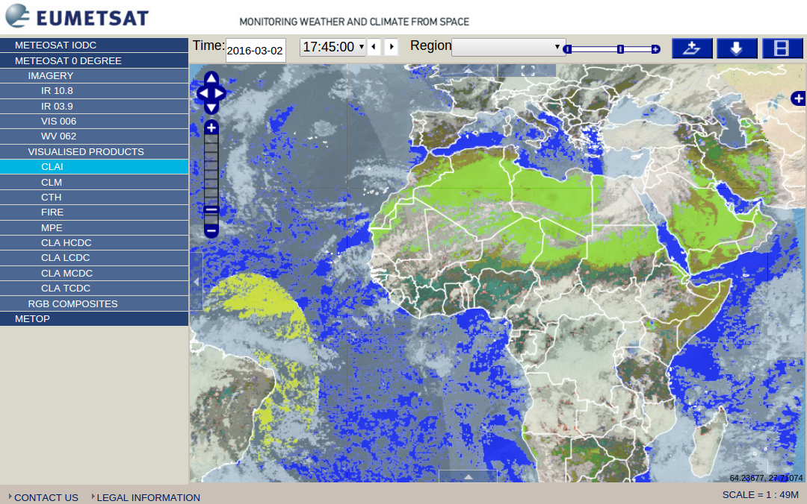
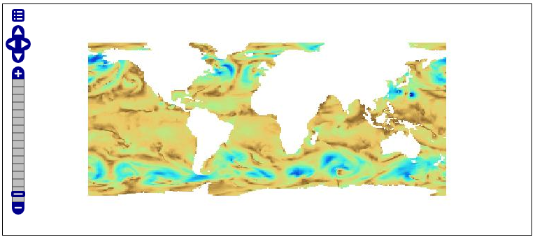
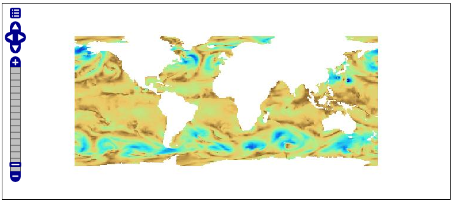

OGC Testbed-12 Kick-Off
USGS - Reston, VA - 2016-03-03
Stephan Meißl stephan.meissl@eox.at @Schpidi
Andrea Aime andrea.aime@geo-solutions.it @geowolf
 This work is licensed under a Creative Commons Attribution 4.0 International License.
This work is licensed under a Creative Commons Attribution 4.0 International License.
Contributions
LSA Thread
- 19 Coverages
- NA001 WCS new profile 1
- NA006 WMTS for time-varying layers
- NA007 WMS for NetCDF
- 16 Big Data Tiles
- A017 Big Data Tile Database Implementation
- A076 Contributions to Big Data Database ER
Parallel activity EVO-ODAS
- Coordinated by DLR - German Aerospace Center
- ESA funded project
- Objective to improve the acceptance of online EO data access services and standards and to promote their evolution and diffusion
- Overlapping with Testbed-12 e.g. multidimensional data, security, etc.
- Further details
NA001 WCS new profile 1
- Extend EO-WCS support for 3D space and 1D time data in EOxServer
EOxServer in brief
- MIT-style license
- Version 0.2.0 released on May 4th 2012
- WCS, EO-WCS, WMS, EO-WMS, WCS-T (synchronous & asynchronous)
- Rectified- & ReferenceableGridCoverages
- Client for demonstrating integrated usage of EO-WMS & EO-WCS (used for generation of above EO WCS demo slides)
- Admin app & Log viewer
- Command line tools: "eoxserver-admin.py create_instance ...", eoxs_add_dataset_series, eoxs_register_dataset, eoxs_synchronize
- Python Package Index (PyPI)Rectified- and ReferenceableGridCoverages
- DatasetSeries and StitchedMosaics
- Integration with security system (IDMS)
- Included on OSGeo Live
- eoxserver.org
- github.com/EOxServer/eoxserver
NA006 WMTS for time-varying layers
- Extend temporal WMTS tile assembly in MapCache - EOX
- Implement logic to avoid requesting empty tiles in MapCache - EOX
- Participate in OGC WMS.SWG - EOX
- Support for communication of empty areas in GeoServer WMS/WMTS - GeoSolutions
- Improved Support for TIME and other dimensions in GeoServer WMS/WMTS - GeoSolutions
MapCache in brief
- Suite
- MIT-style license
- Stable release 1.4
- Tiling Library with Apache, FastCGI, Nginx, and Node frontends
- Native code: Fast and Efficient
- mapserver.org/mapcache/index.html
- github.com/mapserver/mapcache
MapCache main features
- Multiple Protocols like WMTS, WMS, TMS, etc.
- Multiple cache backends e.g. SQLite, disk, (Geo)TIFF, REST
- Tile Management Features: seeding, recompression, interpolation
- (OGC) Proxy: serve from cache if possible, forward otherwise
- Mixed jpeg + png format
- Reconstruct paletted 1bit PNG from uniform color
- and many more
Time dimension
- Each timestamp corresponds to a limited extent
- Dynamic Mosaic given a requested time interval
- Create Animated GIF from selected tiles
GeoServer in brief
- Can do a lot of things, focusing just on the testbed12 topics of interest
- Dimension support for WMS, can deal with dimensions in WMTS (see later how), WCS-EO extensions of our own to describe multiple dimensions
- NetCDF-CF as input for WMS/WMTS/WCS/WPS, NetCDF-CF out (WCS 2.0 only)
- Authentication - basic/digest/cas/j2ee/proxy - users from xml/dbms/ldap/...
- Authorization - advanced support with GeoFence plugin, authorize by area, attribute, whatever filter
- WPS process to add asynch support to WFS/WCS large data extractions
- GeoPackage generation (tiles and vector)
GeoWebCache/GeoServer WMTS dimension support
- We can tell that "TIME", "ELEVATION" and "DIM_REFENCE_TIME" are valid request params to GWC
- Will build a separate tile cache for each combination of values
- Use "disk quota" to avoid disk space usage explosion
- In memory clustered cache for data with very frequent updates 
Drill down and discover multiple dimension relationships
- Domains of the dimensions related with each other (e.g., reference_time and time)
- Need a way to find out from the client which values are available by drilling down from one dimension to the other
- Commonly done by exposing the ND mosaic index as a WFS layer, spatial, attribute filtering, paging and sorting available but...
- No direct way to correlate the dimensions exposed in WMS with the index exposed in WFS, we need to amend that
- Also, find more compact ways to list the available values e.g.
select distict(dim_att) where dim_att between x and y and ...
Proposal to avoid requesting empty tiles
- Return a custom HTTP header indicating an empty tile
- Tiles on lower zoom levels don't need to be requested
NA007
- Add support for WMS extensions of ncWMS in EOxServer e.g. color scales in GetMap requests or GetTimeseries request type - EOX
- Add support to filter WMS Capabilities e.g. XPath in EOxServer - EOX
- Add support for further WMS extensions of ncWMS in EOxServer - EOX
- Enhance NetCDF-CF metadata handling in EOxServer - EOX
- Dynamic ColorMaps Support in GeoServer WMS - GeoSolutions
- Improved GetLegendGraphic in GeoServer WMS - GeoSolutions
- Simplified Harvesting of NetCDF-CF files in GeoServer - GeoSolutions
- Improved GetCapabilities for large number of datasets (possibly using XPath) in GeoServer - GeoSolutions
Dynamic colormaps support in GeoServer
- Collect statistisc from data (e.g. histogram)
- Create a color map on the fly based on the statistics and a named color map type
- Based on GeoServer own SLD extension called "Rendering transformations" (aka "apply me a WPS process on the fly before rendering data")
 

GetLegendGraphics for dynamic colormaps
- GetLegendGraphics needs to learn about dynamic colormap
- Display the right colormap, display the right values on the side
LSA - Big Data Tiles
- Contributions to & review of Big Data Database ER
- Big Data Tile Database Implementation
- Evaluate PostgreSQL as alternative to SQLite in GeoPackage
- Implement database generation, dump, and restore scripts for PostgreSQL as alternative to SQLite in GeoPackage
OGC Testbed-12 Kick-Off
USGS - Reston, VA - 2016-03-03
Stephan Meißl stephan.meissl@eox.at @Schpidi
Andrea Aime andrea.aime@geo-solutions.it @geowolf
This work is licensed under a Creative Commons Attribution 4.0 International License.